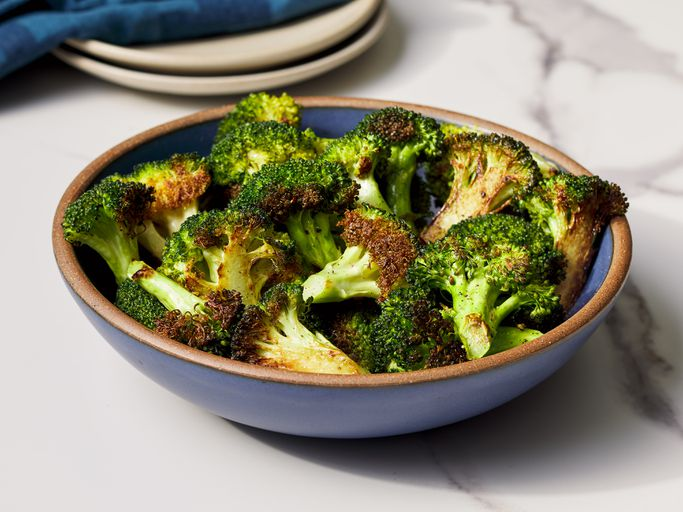

Broccoli
Home

Description
Roasted broccoli is easy to make and so much more flavorsome than boiled. My favorite part is the roasted sliced stem pieces.
Ingredients
- 14 ounces broccoli
- 1 tablespoon olive oil
- salt and ground black pepper to taste
Steps
- Gather ingredients and preheat oven
- Cut broccoli florets from the stalk
- Peel the stalk and slice
- Mix florets and stem pieces with olive oil
- Roast in oven until tender and lightly browned